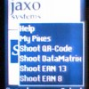
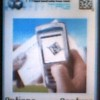
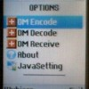

Lukem.net nie jest już aktualizowany. Przeczytaj ostatni wpis »
Programy do odczytu kodów 2D
21.08.2008, 22:55 MobilePisałem ostatnio o dwuwymiarowych kodach kreskowych, które w różnych postaciach zyskują (albo nawet już zyskały) na popularności. Przez ostatnie kilkanaście godzin testowałem kilka aplikacji komórkowych dekodujących najpopularniejsze standardy kodów 2D.
Początkowo planowałem zrobić szczegółowy test na wzór tych z “Komputer Świat”, jednak ustalenie obiektywnych kryteriów oceny każdego programu okazało się praktycznie niemożliwe. Skuteczność odczytu przez poszczególne programy była sprawą losową – wielokrotne próby w porównywalnych (a nawet takich samych) warunkach kończyły się różnie i zamknięcie ich w sztywnych regułkach byłoby zbytnim uproszczeniem. Mogę jedynie zapewnić, że każdy program przechodził co najmniej kilkukrotne testy na monitorze CRT, panelu LCD (do tego ustawionym “twarzą” do słoca, co utrudniało nieco zadanie) i miał za zadanie odczytać kody z mojego ostatniego wpisu, “piaskownicy” Kaywa oraz Serwisu TV Wirtualnej Polski. Próbowałem także rozkodować sekretną wiadomość KHRoNa, jednakże tej próby nie przeszła żadna aplikacja. Być może to wina mojego sprzętu (SE K310i), a ściślej rozdzielczości aparatu (maks. VGA). Ustaliłem, że optymalne rozmiary kodów do odczytu dla mojej komórki powinny oscylować w okolicach 100×100 pikseli.
 Pierwszym programem, który zadziałał na moim telefonie był Snap’a'bar Build #289. Jego instalacja nie nastręczyła większych problemów. Jego skuteczność, zarówno w przypadku CRT jak i LCD również była całkiem zadowalająca, jednak wygoda użytkowania pozostawia wiele do życzenia. Po uruchomieniu Snap’a'bar wymaga wyboru typu kodu do odczytania (Data Matrix, QR-Code, EAN-8, EAN-13), co oczywiście oznacza, że użytkownik musi te typy kodów znać i rozróżniać samodzielnie. Mi nie sprawia to już kłopotów (przynajmniej jeśli chodzi o Data Matrix, QR-Code, Maxicode i Aztec – ze szczególnym naciskiem na dwa pierwsze), ale “szaremu” użytkownikowi nie powinno to być potrzebne do szczęścia.
Oprócz tego dość niefortunnie rozwiązano menu główne – prawie nie widać na wyświetlaczu, którą opcję wybieramy, co sprawia, że Snap’a'bar trzeba obsługiwać trochę na pamięć. Niewielkim (bo w zasadzie mało istotnym) szczegółem jest fakt, że udawało mi się odczytywać kody EAN-8 na kopercie po przesyłce z UPS. Nie potrafię jednak zweryfikować poprawności tych odczytów, gdyż otrzymane numery nie figurowały nigdzie na kopercie. W każdym razie nie jest mi to potrzebne do szczęścia.
Kaywa Reader zająłby miejsce Snap’a'bara w kolejności testowania, gdyby nie problemy z jego uruchomieniem. Po pierwsze, nie znalazłem wersji pasującej do mojego modelu telefonu. Po drugie, nawet po ściągnięciu innej dostawałem pusty biały ekran. Dopiero pobranie aplikacji bezpośrednio na telefon okazało się skutecznym rozwiązaniem (wcześniej używałem do tego kabla USB).
Pomimo teoretyczniej niekompatybilności Kaywa Reader działał bez zarzutu. Mało tego, nie posiada on wad Snap’a'bara – po uruchomieniu program od razu uruchamia aparat i rozpoznaje kody (QR-Code i Data Matrix) automatycznie – nie trzeba ich wybierać z menu. Pod względem skuteczności nieznacznie góruje nad Snap’a'barem (zdecydował o tym maleńki kod Data Matrix na rachunku TP), z jednym zastrzeżeniem – należało zmienić rozdzielczość odczytu z “Best” na “Basic” (to samo dotyczyło modelu K750i). Ogólnie rzecz ujmując, Kaywa Reader okazała się najwygodniejszą ze wszystkich testowanych przeze mnie aplikacji.
Zająłem się także dystrybuowaną przez Orange aplikacją Fotokody, która dostępna jest do pobrania po wysłaniu bezpłatnego SMSa o treści “Fotokody” pod nr 8085 (a jeśli komuś nie chce się wysyłać SMSa, to może wpisać w przeglądarce telefonu adres http://dl.fotokody.pl/download.jsp). Rozwijany przez firmę Abaxia program wypadł najgorzej w moich testach – nie udało mi się odczytać ani jednego kodu Data Matrix ani QR-Code (nie wiem, czy w ogóle obsługuje te drugie?). A przy zerowej skuteczności nawet polski interfejs, podobny do tego z Kaywa Reader, niewiele mu pomaga. Domyślam się jednak, że jest to wersja testowa i w przyszłości program może działać lepiej. Pożiwiom, uwidim.
 Przy okazji zawędrowałem też na stronę Mobiletag.com, której adres pojawił się gdzieś w Fotokodach. Tam czekał na mnie kolejny program, zwany po prostu MobileTag. Nie wyróżnia się on niczym szczególnym, no może z wyjątkiem trybu pracy (robi zdjęcia automatycznie co kilka sekund). Aha – program ma francuskojęzyczny interfejs i z niewiadomego powodu każe wybierać w menu uywaną sieć komórkową (oczywiście spośród francuskich, ale jest opcje “inne”).
 Jako ciekawostkę potraktowałem programy J2MEDataMatrix i J2MEQRCode od DrHu.org. Oba programy są płatne ($2.99) i można je nieodpłatnie przetestować przez okres jednego uruchomienia (czyli od momentu instalacji do pierwszego wyjścia z programu, przy następnym uruchomieniu pojawia się już prośba o kod aktywacyjny). W zasadzie jedynym plusem obu programów jest mozliwość skanowania kodów z obrazków umieszczonych w pamięci telefonu oraz w internecie (należy podać adres URL). O odczytach się nie wypowiem, bo nie zrobiłem ich zbyt wiele.
Symbianowcy mają także QuickMark, ale tej aplikacji z wiadomych powodów nie testowałem.
Werdykt zatem brzmi – pod względem wygody i użyteczności Kaiwa Reader jest moim zdecydowanym faworytem, zaś na drugim miejscu Snap’a'bar. Może za rok albo dwa dołączą do nich rodzime Fotokody, o ile pomysł z upowszechnieniem kodów 2D w Polsce w ogóle się przyjmie. Póki co, można się tym pobawić przez dzień lub dwa, potem zapomnieć.
Tagi: data matrix, fotokody, j2me, kaywa, kody 2d, komórki, Mobile, mobiletag, qr-code, snapabar
Zobacz także
Komentarze do wpisu
-
abec22.08.2008, 2:04
Tak to wygląda jakbym tylko ja znalazł w sieci i-nigmę – http://i-nigma.com
Działa świetnie, wiadomość KHRona odczytałem w ułamku sekundy, nieraz też ściągałem za pomocą kodów różne programy. -
Av22.08.2008, 13:19
Program od Orange to totalna porażka. Udało mi się za jego pomocą odczytać tylko jeden. Testowy na stronie Orange. Z niczym innym sobie nie poradził.
-
ra22.08.2008, 19:23
gdzie na stronie tv.wp.pl są kody?
-
Lukem22.08.2008, 20:01
ra: Otwórz stronę główną (tv.wp.pl) i kliknij na dowolny program, który jeszcze nie został wyemitowany. Kod pojawia się pod jego opisem.
-
Olek Nowodziński22.08.2008, 21:55
@abec: Coś padła chyba strona tej i-nigmy. Posiadasz inne źródło?
-
Lukem22.08.2008, 23:14
Wygooglałem jeszcze http://www.i-nigma.mobi/ (strona dla telefonów).
-
D4rky22.08.2008, 23:15
dzieki za wpis, kolejny program na komorce dograny ;)
-
Ktos24.08.2008, 12:41
Uwaga natury technicznej: QuickMark dostępny jest nie tylko dla Symbiana, ale i Windows Mobile.
Aczkolwiek aparat mojego PDA ma tak porysowaną szybkę zasłaniającą obiektyw przed porysowaniem, że nic nie widać przez nią, ludzi na zdjęciach się nie da rozpoznać, a nie ma co mówić o kodach 2D ;-)
-
Krzysztof1.03.2009, 11:55
Wpis już dosyć stary, ale może warto wyjaśnić problem fatalnej skuteczności aplikacji Fotokody. Otóż rozwiązanie zagadki jest dość proste – aplikacja firmy Abaxia odczytuje tylko kody własnego formatu – to jest tylko takie, które zawierają specjalne identyfikatory (np. 54192400197) treści (wizytówek, urli) znajdujących się na serwerach wspomnianej firmy. Jeśli chcemy aby kod 2D został poprawnie odczytany przez aplikację Fotokody, należy stworzyć go najpierw na stronach serwisu mobiletag.com. Próba odczytania każdego innego kodu kończy się niepowodzeniem. Taka próba monopolizacji rynku kodów 2d w Polsce, która mam nadzieję skończy się bardzo szybko – z korzyścią dla przyszłych wdrożeń kodów 2d w naszym kraju.
-
Pawel2.03.2009, 21:51
JA tez polecam i-nigma, czyta wszystko chociaż to co jest w Polsce rozpowszechniane ta często kombinacje funkcji (np 03|blablabla|[889]) zdefiniowanych przez firme wydajaca aplikacje promowana przez Orange. Generalnie rzecz biorac i-nigma jest najlepsza poniewaz jest za free, czyta kilka formatów kodów, pozwala na ustawienia (np. nie otwiera od razu strony do ktorej kieruje fotokod), nie zawiesza nokii – aplikacja od Orange czesto sie wiesza).
-
Lukem2.03.2009, 22:08
Na moim obecnym telefonie i-nigma to chyba jedyny program, który w miarę dobrze działa. Kaywa Reader zniekształca mi obraz, przez co odczytanie jakiegokolwiek kodu jest zupełnie niemożliwe. Do pozostałych nie wracałem.
-
Banny13.06.2009, 13:41
Pod mój dotykowy Samsung F480 Kaywa nie chce pójść – tzn. nie ma supportu na ten telefon. Ja używam zatem BeeTagg. Trochę trwało jak doszłam do tego co i jak, ale działa… :)
-
Lukem13.06.2009, 21:42
Ja z tymi kodami mam problem. Wpis napisałem za czasów SE K310i. Teraz mam K810i (z lepszą optyką i matrycą), a mimo to większość programów ma spore problemy z odczytem nawet dużych kodów. Kaywa Reader też nie ma wersji na mój telefon – niby działa od K800i, ale przekrzywia obraz na wyświetlaczu i trudno wykadrować ujęcie.
BeeTagg też jak na razie nie zachwycił mnie skutecznością, ale ichni standard kodu (plastry miodu) podoba mi się i szkoda, że raczej nie ma szans na upowszechnienie. :)
-
yoyo18.07.2009, 10:48
abec: fotokody.pl i fotokody.pl/generator/
Od 21.08.2009 r. możliwość komentowania wpisów została wyłączona.
Krótko i zwięźle
o mnie i o blogu Nazywam się Łukasz Wójcik. Strona ta była swego czasu moim sieciowym poligonem. Od sierpnia 2009 r. funkcjonuje jako archiwum wpisów. Więcej o mnie znajdziesz na mojej stronie domowej.
Nazywam się Łukasz Wójcik. Strona ta była swego czasu moim sieciowym poligonem. Od sierpnia 2009 r. funkcjonuje jako archiwum wpisów. Więcej o mnie znajdziesz na mojej stronie domowej.
Archiwum
historia wpisów na blogu- Wrzesień 2009
- Sierpień 2009
- Lipiec 2009
- Czerwiec 2009
- Maj 2009
- Kwiecień 2009
- Marzec 2009
- Luty 2009
- Styczeń 2009
- Grudzień 2008
- Listopad 2008
- Październik 2008
- Wrzesień 2008
- Sierpień 2008
- Lipiec 2008
- Czerwiec 2008
- Maj 2008
- Kwiecień 2008
- Marzec 2008
- Luty 2008
- Styczeń 2008
- Grudzień 2007
- Listopad 2007
- Październik 2007
- Wrzesień 2007
- Sierpień 2007
- Lipiec 2007
- Czerwiec 2007
- Maj 2007
- Kwiecień 2007
- Marzec 2007
- Styczeń 2007
Kategorie
co Cię interesuje?Blogroll
lubię i polecamMiniblog
#PolandwantsJB (2) 19.07.2009 r.
Drogie Polki i drodzy Polacy. Nie przenoście zwyczajów rodem z blogów Onetu na Twittera. Zamiast bezsensownie spamować międzynarodowy serwis i wyrabiać sobie i innym wątpliwą renomę, napiszcie maile do tych swoich Jonas Brothers albo zwróćcie się do nich bezpośrednio. Dziękuję za uwagę.
Egzystencjalne #8 (3) 17.07.2009 r.
W całej tej wojnie o publiczne media uwiera mnie jeden fakt. W okresie wakacyjnym większość telewizji (prywatne też, ale teraz nie o nich mowa) serwuje powtórki wszystkiego, co im się nawinie pod rękę i jeszcze się nadaje do odtworzenia. Ciekawy jestem dlaczego zamiast płacić abonament, nie można wysłać im kserokopii dowodów wpłat z zeszłego roku.
Nowy hosting (5) 12.07.2009 r.
Od kilkudziesięciu godzin blog jest serwowany z nowego miejsca – Linuxpl.com. Przerwa w działaniu byłaby krótsza gdyby nie OVH i Firefox, które wspólnie odmówiły mi szybkiego odświeżenia i rozpropagowania nowych DNSów. Jednak wszystko wskazuje na to, że operacja się udała, a pacjent (czyt. blog) działa nieco szybciej.

{kind=link}
{kind=link}
{kind=link}
{kind=link}
{kind=link}